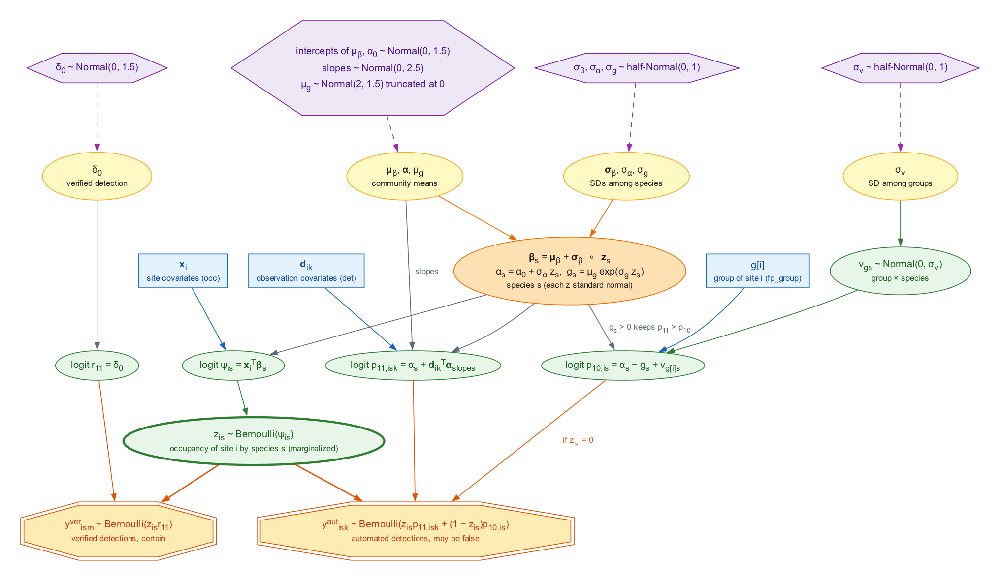
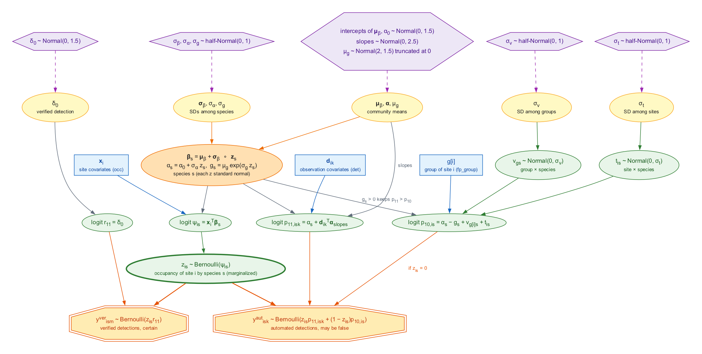

fp_occu_ms() is in development (see
?crywolf-api): its arguments, results and output names may
change in a minor version.
A classifier run on passive acoustic recordings rarely targets one
species. The same recordings, the same recorders and often the same
reviewer serve the whole list of species that the classifier knows.
fp_occu_ms() fits the false-positive occupancy model of
fp_occu() to all of them at once. Each species keeps its
own occupancy, true detection and false-positive rate, but these are
drawn from distributions of the community, so that a species with few
detections or few verified occasions borrows strength from the others,
as in the community occupancy models of Dorazio and Royle (2005).
This article describes the model, and then a choice that the multispecies setting makes pressing: how much the false-positive rate of a species may vary among sites. The two forms compared here, called “fs” and “mixed”, differ in one random effect. The fitting code is shown but not run when the article is built.
The model
Data
fp_data(species = "species") reads auto and
verified tables with one row per occasion and species.
Every recorded occasion appears for every species of the list, with
y = 0 where the species was not detected: without these
rows there are no non-detections. The species are those of the list, and
none is assumed to be absent from it, since the model has no data
augmentation for species never detected.
Species and community
At site i, for species s and automated occasion k, the model of
vignette("crywolf"), the multiple-methods design of Miller
et al. (2011), holds species by species:
\mathrm{logit}(\psi_{is}) = \mathbf{x}_i^\top \boldsymbol{\beta}_s, \qquad \mathrm{logit}(p_{11,isk}) = \alpha_s + \mathbf{d}_{ik}^\top \boldsymbol{\alpha}, \qquad \mathrm{logit}(p_{10,is}) = \alpha_s - g_s,
where \psi_{is} is the occupancy
probability, p_{11,isk} the probability
of an automated detection when the species is present, and p_{10,is} the probability of one when it is
absent, a false positive. The gap g_s >
0 keeps the false-positive rate of each species below its
true-detection rate at the reference, as \Delta does in fp_occu(). The
species values are drawn from the community, on the non-centred
scale:
\boldsymbol{\beta}_s = \boldsymbol{\mu}_\beta + \boldsymbol{\sigma}_\beta \circ \mathbf{z}_s, \qquad \alpha_s = \alpha_0 + \sigma_\alpha z_s, \qquad g_s = \mu_g \exp(\sigma_g z_s),
with each z standard normal and
independent. The community means have the priors of the intercepts,
slopes and gap of fp_priors(), and the standard deviations
among species half-Normal priors with scale
fp_priors()$species_sd (1 by default). The slopes of
det, the verified detection probability r_{11} and the recorder effect are shared by
the species unless by_species says otherwise. The false
positives of a species do not depend on the other species: the model
describes a classifier that labels a species where it is absent, not one
that confuses two species with each other.
How much does the false-positive rate vary?
In the model above, the false-positive rate of a species is the same
at every site, up to the covariates of fp. In acoustic data
this is rarely true. The sounds that a classifier mistakes for a species
(another frog calling at the same pond, insects, rain, a road) belong to
places, and they change from month to month.
fp_occu_ms() offers two random effects on the logit of
the false-positive rate, both with half-Normal priors of scale
fp_priors()$fp_site_sd. They matter most when each “site”
of the data is a site in one period, for example a pond in one month, so
that several sites of the data share one physical site.
-
fp_groupnames a column of the sites table that groups them, for example the physical site, and adds an effect v_{gs} for each group g and species s, reported through its standard deviationsd_fp_group(\sigma_v). -
random_fp = TRUEadds an effect t_{is} for each site of the data and species, reported assd_fp_site(\sigma_t).
The fs model uses the first one alone:
\mathrm{logit}(p_{10,is}) = \alpha_s - g_s + v_{g[i]s}, \qquad v_{gs} \sim \mathrm{Normal}(0, \sigma_v).
The mixed model adds the second one:
\mathrm{logit}(p_{10,is}) = \alpha_s - g_s + v_{g[i]s} + t_{is}, \qquad t_{is} \sim \mathrm{Normal}(0, \sigma_t).
# sites are pond-months; the column "pond" names the physical site
m_fs <- fp_occu_ms(d, occ = ~ x, det = ~ bio, fp = ~ 1, fp_group = "pond")
m_mixed <- fp_occu_ms(d, occ = ~ x, det = ~ bio, fp = ~ 1, fp_group = "pond",
random_fp = TRUE)
The fs model. Hexagons are priors, yellow ellipses community parameters, the orange ellipse the values of each species, blue rectangles data that enter as covariates, green ellipses random effects and linear predictors, and octagons the observed detections. The recorder effect and the slopes of fp and ver are left out.

The mixed model: the fs model with an effect of each site of the data and species, t, on the false-positive rate.
What tells the effects apart
The two random effects act only on the branch of the likelihood where the species is absent. A site with automated detections of a species can be explained in two ways: the species is present, or it is absent and the false-positive rate there is high. The verified occasions, which contain no false positives, are what separate the two explanations, and only at the sites where they were made.
This has a consequence for each model, which follows from the likelihood and which the simulations below measure. In the fs model, the effect v_{gs} is shared by all the sites of group g. A verified occasion at one pond-month therefore informs the false-positive rate of the other months of that pond. In the mixed model, t_{is} belongs to one site of the data. At a site with detections and no verified occasion, only \sigma_t limits how far t_{is} can rise. When \sigma_t is large, the posterior of such a site can have two modes, one with the species present and t_{is} near zero and one with the species absent and t_{is} high. Chains that settle in different modes give large R-hat values for \sigma_t and for those sites.
A practical reading follows: fit the fs model first, and use the mixed model as a check of how sensitive occupancy is to month-to-month variation in false positives. The simulations below support this order for moderate variation among sites, but they did not test large values of \sigma_t. The convergence of the mixed model should be checked before its estimates are compared with those of fs. Our interpretation, not tested, is that the mixed model needs verified occasions spread over many sites of the data, not only over many groups.
Simulations
Design
All datasets came from simulate_fp_ms(), with 100 sites,
10 automated occasions per site and 30% of the sites verified on 3
occasions each. Occupancy depended on a standardized covariate, with
community mean occupancy 0.4 at its mean (standard deviation among
species 1 on the logit scale) and community mean slope -0.5 (standard deviation 0.5). True detection
was 0.5 at the reference (standard deviation 0.5), with a shared slope
of 0.5 on an occasion covariate; the false-positive rate was 0.05 at the
median gap (standard deviation of the log gap 0.3); and verified
detection was 0.6. Every fit used the default priors of
fp_priors(), 4 chains of 1000 warm-up and 1000 sampling
iterations, and adapt_delta = 0.95.
-
Recovery. Communities of 5 and 20 species in three
scenarios, with 50 replicates each: all species as above (“base”); the
first species rare, with occupancy 0.05 at the mean of the covariate
(“rare”); and the first species without verified occasions
(“unverified”). In the rare and unverified scenarios the first species
was also fitted alone with
fp_occu(), to measure what the community lends it. Communities of 50 species, base scenario only, with 20 replicates, show how the model scales. The same 50-species datasets were also fitted withcentered = TRUE(modelms_centered), and withcentered = TRUEandcentered_occ = TRUE(modelms_centered_occ). - fs and mixed. Communities of 10 species, the 100 sites in 25 groups of 4 (a physical site with four months), 50 replicates per scenario. In the “fs” scenario the false-positive rate varied among groups (\sigma_v = 0.7); in the “mixed” scenario it varied among groups and among sites (\sigma_v = 0.7, \sigma_t = 0.5). Both models were fitted to every dataset.
- Simulation-based calibration. Communities of 10 species at 80 sites with 8 occasions, the community parameters drawn from the priors, 200 replicates.
s <- simulate_fp_ms(nspecies = 10, nsite = 100, nocc = 10, a_bio = 0.5,
ngroup = 25, sd_fp_group = 0.7, sd_fp_site = 0.5, seed = 1)
s$truth$pars[c("sd_fp_group", "sd_fp_site")]
m <- fp_occu_ms(s$data, occ = ~ x, det = ~ bio, fp = ~ 1, fp_group = "group",
random_fp = TRUE)Results
All the tables below come from dev/ms-sim/summarise.R.
Coverage is the share of 95% intervals that contained the true value,
and width is the mean width of these intervals. Values of each species
are pooled over the species of a community and marked
[sp].
Convergence and time
A fit counted as converged when every parameter with a true value had R-hat below 1.01 and the sampler had no divergent transitions.
| nspecies | scenario | model | n | converged | with_divergences | max_rhat | min_ess | median_hours |
|---|---|---|---|---|---|---|---|---|
| 5 | base | ms | 50 | 0.98 | 0.02 | 1 | 920 | 0.710 |
| 5 | rare | ms | 50 | 0.90 | 0.10 | 1 | 900 | 0.680 |
| 5 | rare | single | 50 | 1.00 | 0.00 | 1 | 1400 | 0.018 |
| 5 | unverified | ms | 50 | 0.96 | 0.04 | 1 | 960 | 0.590 |
| 5 | unverified | single | 50 | 1.00 | 0.00 | 1 | 1300 | 0.013 |
| 10 | fs | fs | 50 | 0.94 | 0.00 | 1 | 460 | 1.800 |
| 10 | fs | mixed | 50 | 0.92 | 0.02 | 1 | 260 | 2.000 |
| 10 | mixed | fs | 50 | 1.00 | 0.00 | 1 | 500 | 1.900 |
| 10 | mixed | mixed | 50 | 0.42 | 0.02 | 1 | 120 | 2.000 |
| 20 | base | ms | 50 | 0.64 | 0.00 | 1 | 300 | 4.300 |
| 20 | rare | ms | 50 | 0.68 | 0.00 | 1 | 430 | 4.600 |
| 20 | rare | single | 50 | 0.96 | 0.02 | 1 | 350 | 0.020 |
| 20 | unverified | ms | 50 | 0.50 | 0.00 | 1 | 340 | 4.300 |
| 20 | unverified | single | 50 | 1.00 | 0.00 | 1 | 810 | 0.017 |
| 50 | base | ms | 20 | 0.10 | 0.00 | 1 | 180 | 7.800 |
| 50 | base | ms_centered | 20 | 0.75 | 0.00 | 1 | 300 | 5.900 |
| 50 | base | ms_centered_occ | 20 | 1.00 | 0.00 | 1 | 2400 | 5.700 |
With 5 species, 98% of the fits in the base scenario passed this criterion. With 20 species, only 64% did. With 50 species, 10% did. The fits of 20 and 50 species that failed had no divergences. Their largest R-hat was 1.028, and the smallest bulk ESS was 178 of 4000 draws. The parameters that crossed 1.01 most often were the community intercepts of occupancy, detection and the false-positive rate. These R-hat values stayed close to the threshold. The centred parametrization removed these failures (see below). A fit of 20 species took a median of 4.3 hours, and a fit of 50 species 7.8 hours, with the four chains in sequence on one core.
Centred parametrization with 50 species
With centered = TRUE, the detection intercepts, the gaps
and the species slopes of detection are drawn on the centred scale, for
example \alpha_s \sim \text{Normal}(\alpha_0,
\sigma_\alpha); the occupancy coefficients stay on the
non-centred scale. On the same 20 datasets of 50 species, 75% of the
fits passed the convergence criterion, against 10% with the default. A
fit took a median of 5.9 hours.
| param | model | rhat_over | ess_bulk |
|---|---|---|---|
| det_(Intercept) | ms | 0.75 | 300 |
| det_(Intercept) | ms_centered | 0.00 | 6900 |
| det_(Intercept) | ms_centered_occ | 0.00 | 7700 |
| fp_(Intercept) | ms | 0.40 | 380 |
| fp_(Intercept) | ms_centered | 0.00 | 6900 |
| fp_(Intercept) | ms_centered_occ | 0.00 | 7800 |
| fp_gap | ms | 0.25 | 430 |
| fp_gap | ms_centered | 0.00 | 6300 |
| fp_gap | ms_centered_occ | 0.00 | 7200 |
| occ_(Intercept) | ms | 0.60 | 340 |
| occ_(Intercept) | ms_centered | 0.25 | 540 |
| occ_(Intercept) | ms_centered_occ | 0.00 | 7500 |
The table gives, for each community intercept, the share of fits with
R-hat of 1.01 or more (rhat_over) and the mean bulk ESS.
For the intercepts of detection and the false-positive rate and the
median gap, the mean bulk ESS rose from 298–426 to 6326–6939, and no fit
crossed 1.01. The occupancy intercept, still on the non-centred scale,
crossed 1.01 in 25% of the fits; it caused the remaining failures.
The occupancy coefficients have their own switch,
centered_occ, because the number of sites, not of
occasions, sets how narrow their posteriors are. With
centered = TRUE and centered_occ = TRUE (model
ms_centered_occ), 100% of the fits passed the convergence
criterion. The mean bulk ESS of the occupancy intercept rose from 536 to
7524. A fit took a median of 5.7 hours. Bias, RMSE and coverage were
practically the same in the three versions, since the model is the same.
For communities of 50 species at 100 sites, we therefore suggest
centered = TRUE and centered_occ = TRUE. With
few sites, the centred occupancy coefficients can mix worse; with two
species at 40 sites, they increased the number of divergent
transitions.
Recovery
| nspecies | param | bias | coverage | width |
|---|---|---|---|---|
| 5 | det_(Intercept) | 1.0e-02 | 0.94 | 1.200 |
| 5 | det_bio | 1.4e-02 | 0.92 | 0.200 |
| 5 | fp_(Intercept) | -6.2e-02 | 1.00 | 2.500 |
| 5 | fp_gap | 7.2e-02 | 1.00 | 2.200 |
| 5 | occ_(Intercept) | 1.2e-01 | 0.94 | 1.800 |
| 5 | occ_x | -2.6e-02 | 0.98 | 1.300 |
| 5 | sd_det_(Intercept) | 1.2e-01 | 0.98 | 1.000 |
| 5 | sd_log_fp_gap | 1.4e-01 | 0.88 | 0.820 |
| 5 | sd_occ_(Intercept) | 9.9e-04 | 0.98 | 1.300 |
| 5 | sd_occ_x | 7.8e-02 | 0.96 | 1.100 |
| 5 | verified_(Intercept) | 2.7e-03 | 0.98 | 0.600 |
| 20 | det_(Intercept) | -2.9e-03 | 0.86 | 0.480 |
| 20 | det_bio | 3.4e-03 | 0.96 | 0.099 |
| 20 | fp_(Intercept) | 1.8e-03 | 0.94 | 1.000 |
| 20 | fp_gap | -4.7e-03 | 0.92 | 0.880 |
| 20 | occ_(Intercept) | -3.1e-03 | 1.00 | 0.950 |
| 20 | occ_x | 5.8e-03 | 0.94 | 0.530 |
| 20 | sd_det_(Intercept) | 1.7e-02 | 0.98 | 0.370 |
| 20 | sd_log_fp_gap | 2.1e-02 | 0.90 | 0.250 |
| 20 | sd_occ_(Intercept) | 4.1e-02 | 0.90 | 0.720 |
| 20 | sd_occ_x | 1.9e-02 | 0.98 | 0.470 |
| 20 | verified_(Intercept) | -1.3e-02 | 0.98 | 0.310 |
| 50 | det_(Intercept) | -7.6e-03 | 0.95 | 0.290 |
| 50 | det_bio | -2.7e-03 | 0.90 | 0.062 |
| 50 | fp_(Intercept) | -2.7e-02 | 0.95 | 0.590 |
| 50 | fp_gap | 2.0e-02 | 0.90 | 0.530 |
| 50 | occ_(Intercept) | 2.2e-02 | 0.95 | 0.580 |
| 50 | occ_x | -1.7e-03 | 1.00 | 0.320 |
| 50 | sd_det_(Intercept) | 9.5e-04 | 1.00 | 0.220 |
| 50 | sd_log_fp_gap | 1.9e-03 | 1.00 | 0.140 |
| 50 | sd_occ_(Intercept) | -2.3e-03 | 0.95 | 0.440 |
| 50 | sd_occ_x | -2.2e-03 | 0.95 | 0.270 |
| 50 | verified_(Intercept) | -9.3e-05 | 0.95 | 0.190 |
The community means and the standard deviations among species were recovered with small bias. Coverage ranged from 0.86 to 1, with 50 replicates per cell (20 with 50 species). The intervals were narrower with more species. For the standard deviation of occupancy among species, the mean width fell from 1.3 with 5 species to 0.72 with 20 and 0.44 with 50.
| nspecies | param | n | bias | coverage | width |
|---|---|---|---|---|---|
| 5 | det_(Intercept)[sp] | 250 | -2.9e-03 | 0.94 | 0.470 |
| 5 | fp_gap[sp] | 250 | 2.1e-01 | 0.96 | 2.100 |
| 5 | occ_(Intercept)[sp] | 250 | 4.0e-02 | 0.95 | 1.000 |
| 5 | occ_x[sp] | 250 | -3.3e-02 | 0.94 | 0.990 |
| 5 | p10_ref[sp] | 250 | -4.0e-04 | 0.95 | 0.045 |
| 5 | p11_ref[sp] | 250 | -5.7e-04 | 0.94 | 0.110 |
| 20 | det_(Intercept)[sp] | 1000 | -1.1e-02 | 0.96 | 0.490 |
| 20 | fp_gap[sp] | 1000 | 1.9e-02 | 0.96 | 1.200 |
| 20 | occ_(Intercept)[sp] | 1000 | -6.1e-03 | 0.96 | 1.000 |
| 20 | occ_x[sp] | 1000 | -2.4e-03 | 0.95 | 0.950 |
| 20 | p10_ref[sp] | 1000 | 3.6e-04 | 0.94 | 0.044 |
| 20 | p11_ref[sp] | 1000 | -2.4e-03 | 0.96 | 0.110 |
| 50 | det_(Intercept)[sp] | 1000 | -4.0e-04 | 0.94 | 0.480 |
| 50 | fp_gap[sp] | 1000 | 6.1e-03 | 0.93 | 1.200 |
| 50 | occ_(Intercept)[sp] | 1000 | 1.1e-02 | 0.96 | 0.990 |
| 50 | occ_x[sp] | 1000 | 6.2e-03 | 0.94 | 0.930 |
| 50 | p10_ref[sp] | 1000 | 2.1e-04 | 0.94 | 0.043 |
| 50 | p11_ref[sp] | 1000 | -6.5e-05 | 0.94 | 0.110 |
The values of each species, including the false-positive rate at the
reference, p10_ref, also had coverage close to 0.95.
A rare species and a species without verification
| nspecies | scenario | model | param | rmse | coverage | width |
|---|---|---|---|---|---|---|
| 5 | rare | ms | occ_(Intercept)[sp1] | 0.4300 | 0.96 | 1.900 |
| 5 | rare | ms | p10_ref[sp1] | 0.0070 | 0.96 | 0.029 |
| 5 | rare | ms | p11_ref[sp1] | 0.0740 | 0.88 | 0.240 |
| 5 | rare | single | occ_(Intercept)[sp1] | 0.4400 | 0.96 | 1.900 |
| 5 | rare | single | p10_ref[sp1] | 0.0068 | 0.96 | 0.029 |
| 5 | rare | single | p11_ref[sp1] | 0.1000 | 0.84 | 0.280 |
| 5 | unverified | ms | occ_(Intercept)[sp1] | 0.3500 | 0.94 | 1.100 |
| 5 | unverified | ms | p10_ref[sp1] | 0.0120 | 0.94 | 0.041 |
| 5 | unverified | ms | p11_ref[sp1] | 0.0440 | 0.92 | 0.130 |
| 5 | unverified | single | occ_(Intercept)[sp1] | 0.3500 | 0.92 | 1.200 |
| 5 | unverified | single | p10_ref[sp1] | 0.0110 | 0.96 | 0.042 |
| 5 | unverified | single | p11_ref[sp1] | 0.0430 | 0.88 | 0.130 |
| 20 | rare | ms | occ_(Intercept)[sp1] | 0.4500 | 0.94 | 1.800 |
| 20 | rare | ms | p10_ref[sp1] | 0.0070 | 0.92 | 0.027 |
| 20 | rare | ms | p11_ref[sp1] | 0.0640 | 0.94 | 0.250 |
| 20 | rare | single | occ_(Intercept)[sp1] | 0.5500 | 0.96 | 2.400 |
| 20 | rare | single | p10_ref[sp1] | 0.0073 | 0.92 | 0.031 |
| 20 | rare | single | p11_ref[sp1] | 0.0990 | 0.92 | 0.290 |
| 20 | unverified | ms | occ_(Intercept)[sp1] | 0.2600 | 0.96 | 1.100 |
| 20 | unverified | ms | p10_ref[sp1] | 0.0170 | 0.90 | 0.053 |
| 20 | unverified | ms | p11_ref[sp1] | 0.0370 | 0.88 | 0.120 |
| 20 | unverified | single | occ_(Intercept)[sp1] | 0.2900 | 0.96 | 1.300 |
| 20 | unverified | single | p10_ref[sp1] | 0.0170 | 0.92 | 0.058 |
| 20 | unverified | single | p11_ref[sp1] | 0.0450 | 0.86 | 0.130 |
For a rare species, the community helped most with detection. With 20
species, the root mean squared error of its true-detection probability
p11_ref was 0.064 in the multispecies fit and 0.099 when
the species was fitted alone. Its occupancy intercept gained less, with
a root mean squared error of 0.45 against 0.55. Our reading, not tested
here, is that the detections of a rare species come from few sites, so
the community distribution of detection adds much to them, while its
occupancy still rests on which sites it was found at.
A species without verified occasions was recovered by both fits. In
these simulations the multispecies fit did not reduce the error of its
false-positive rate: the root mean squared error of p10_ref
was 0.017 in the multispecies fit and 0.017 alone, with 20 species.
fs and mixed
| scenario | model | param | bias | coverage | width |
|---|---|---|---|---|---|
| fs | fs | occ_(Intercept)[sp] | -0.00027 | 0.93 | 1.000 |
| fs | fs | p10_ref[sp] | 0.00079 | 0.96 | 0.057 |
| fs | fs | sd_fp_group | -0.01100 | 0.94 | 0.450 |
| fs | mixed | occ_(Intercept)[sp] | -0.01500 | 0.93 | 1.000 |
| fs | mixed | p10_ref[sp] | 0.00057 | 0.96 | 0.058 |
| fs | mixed | sd_fp_group | -0.04100 | 0.94 | 0.490 |
| mixed | fs | occ_(Intercept)[sp] | 0.01900 | 0.95 | 1.100 |
| mixed | fs | p10_ref[sp] | 0.00270 | 0.93 | 0.063 |
| mixed | fs | sd_fp_group | 0.02200 | 0.92 | 0.460 |
| mixed | mixed | occ_(Intercept)[sp] | -0.02500 | 0.96 | 1.100 |
| mixed | mixed | p10_ref[sp] | 0.00270 | 0.94 | 0.065 |
| mixed | mixed | sd_fp_group | -0.02900 | 0.92 | 0.560 |
| mixed | mixed | sd_fp_site | -0.00530 | 1.00 | 0.720 |
Both models recovered the occupancy and the false-positive rate of
each species in both scenarios. The fs model kept coverage close to 0.95
when the false-positive rate also varied among sites, with \sigma_t = 0.5. Larger values of \sigma_t were not simulated. The mixed model
recovered both standard deviations, sd_fp_group and
sd_fp_site.
The mixed model converged less often on the data that it describes:
42% of the fits passed the criterion, against 100% for fs on the same
data. The parameter that failed most often was sd_fp_site,
with R-hat up to 1.03 and a bulk ESS as low as 122. This is the
mechanism described above, in a mild form.
Simulation-based calibration
| variable | n | chisq_p | mean_rank |
|---|---|---|---|
| det_(Intercept) | 200 | 0.280 | 46.6 |
| det_(Intercept)[sp1] | 200 | 0.960 | 48.7 |
| det_bio | 200 | 0.340 | 49.6 |
| fp_gap | 200 | 0.730 | 46.8 |
| occ_(Intercept) | 200 | 0.069 | 48.9 |
| occ_(Intercept)[sp1] | 200 | 0.500 | 49.2 |
| occ_x | 200 | 0.490 | 47.4 |
| p10_ref[sp1] | 200 | 0.420 | 50.6 |
| sd_det_(Intercept) | 200 | 0.019 | 49.7 |
| sd_log_fp_gap | 200 | 0.570 | 49.3 |
| sd_occ_(Intercept) | 200 | 0.720 | 46.0 |
| sd_occ_x | 200 | 0.470 | 49.5 |
| verified_(Intercept) | 200 | 0.410 | 50.5 |
Of the 200 fits, 0 failed and 8 had divergent transitions. The ranks
of the true values among 99 posterior draws were tested for uniformity
in 10 bins, one chi-squared test per parameter. The smallest p-value was
0.019, which is not small after 13 tests. The prior on the standard
deviations among species, half-Normal with scale
species_sd = 1, therefore showed no sign of
miscalibration.
References
Dorazio, R. M., & Royle, J. A. (2005). Estimating size and composition of biological communities by modeling the occurrence of species. Journal of the American Statistical Association, 100, 389–398. https://doi.org/10.1198/016214505000000015
Miller, D. A., Nichols, J. D., McClintock, B. T., Grant, E. H. C., Bailey, L. L., & Weir, L. A. (2011). Improving occupancy estimation when two types of observational error occur: non-detection and species misidentification. Ecology, 92, 1422–1428. https://doi.org/10.1890/10-1396.1